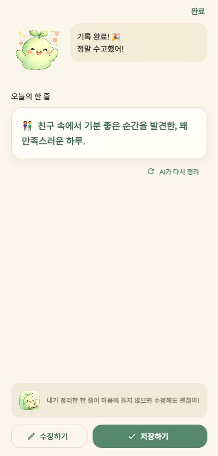
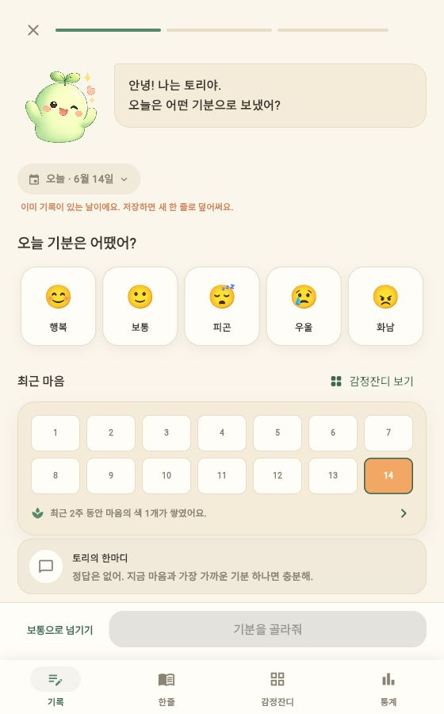
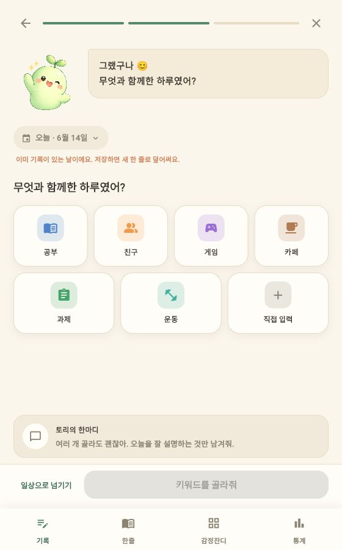
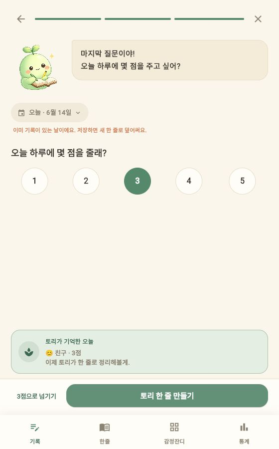
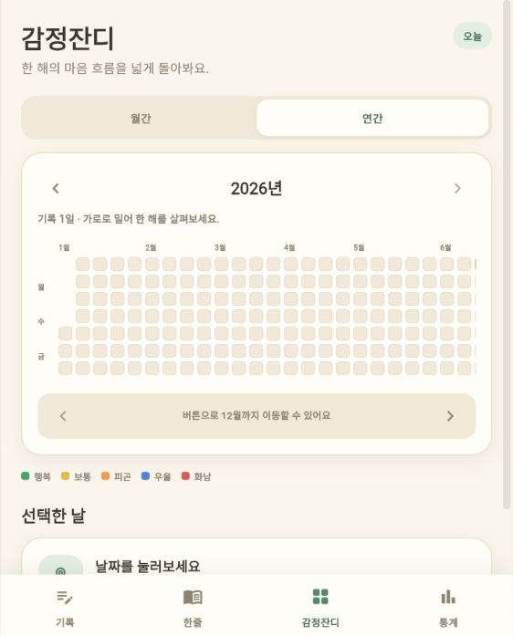
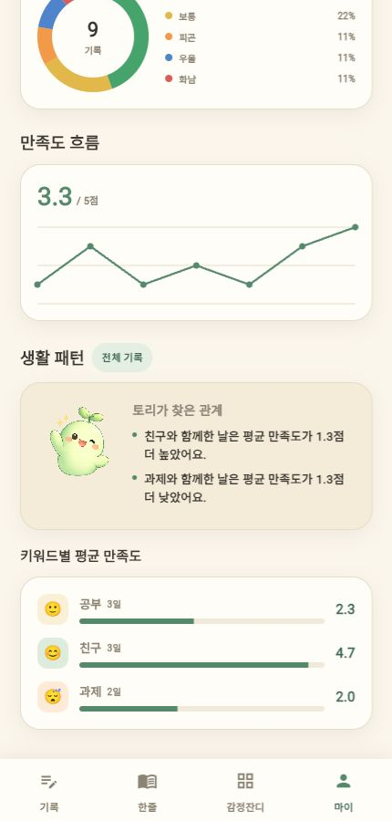
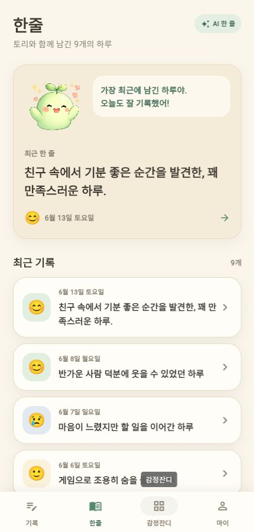

긴 글 작성의 부담
무엇을 써야 할지 고민하다 기록을 미루고, 결국 습관이 끊깁니다.
APP PROGRAMMING PROJECT · 윤세호
긴 글의 부담은 줄이고,
생활과 감정의 관계는 발견하는 다이어리

WHY HARUTALK?
무엇을 써야 할지 고민하다 기록을 미루고, 결국 습관이 끊깁니다.
기록이 쌓여도 어떤 활동이 내 감정에 영향을 주는지 알기 어렵습니다.
ONE QUESTION AT A TIME



PLAN → BUILD → VERIFY
SIMPLE, TESTABLE, REPLACEABLE
질문 표시
선택 입력
결과 화면
기록 생성
수정·삭제
흐름 관리
한 줄 생성
패턴 분석
표본 기준
인터페이스
Drift · SQLite
자동 이전
DECISIONS OVER FEATURES
결과 수정, 날짜 선택, 확인 팝업까지 실수를 복구할 수 있게 설계
모바일 UI와 Web 발표 데모를 하나의 코드베이스로 관리
개인 프로젝트 규모에서 책임 분리와 테스트 가능성을 확보
Repository 경계를 유지하며 기존 기록까지 자동 이전
EVIDENCE, NOT CLAIMS
FROM RECORD TO REFLECTION



AI AS A DEVELOPMENT PARTNER
HARUTALK · FINAL PRESENTATION
하루톡은 일기를 대신 길게 써주는 앱이 아니라,
기록을 시작하기 쉽게 만들고 생활을 돌아보게 하는 앱입니다.
ARCHITECTURE DECISION RECORDS
모바일 중심 UI와 GitHub Pages Web 데모를 하나의 Dart 코드베이스에서 관리합니다.
ChangeNotifier와 Repository Pattern으로 현재 규모에 맞는 책임 분리와 테스트 가능성을 확보합니다.
Drift/SQLite로 오프라인 기록을 구조화하고, 기존 SharedPreferences 기록은 최초 실행에 자동 이전합니다.
SETUP → BUILD → DEPLOY
코드를 실행하기 전에 정적 분석과 단위·통합 위젯 테스트로 회귀를 확인합니다.
빌드는 브라우저용 산출물 생성, 배포는 산출물을 GitHub Pages URL로 공개하는 과정입니다.
REPOSITORY EVIDENCE